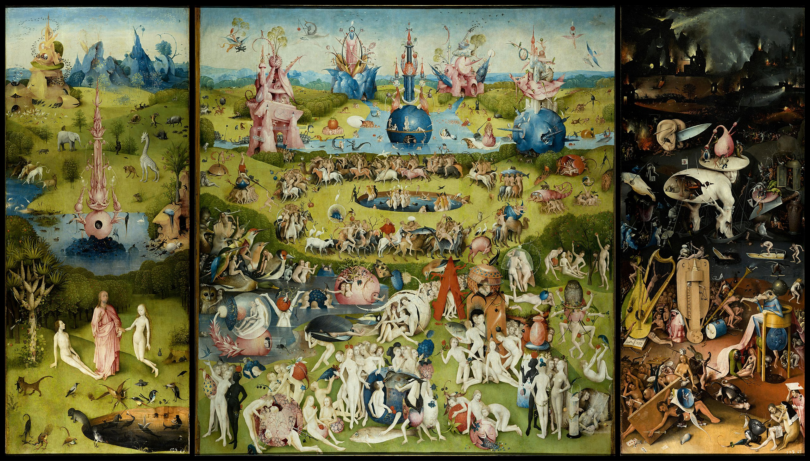

Mirando al’ Bosco
Reverberating Hieronymus Bosch’s Garden of Earthly Delights

Scores & Recordings
Recording
Summary
Mirando al’ Bosco is an electronic poem born from the conflicting reactions stirred by Bosch’s Garden of Earthly Delights. Moving between luminous, ecstatic, grotesque and infernal states, the piece absorbs elements from entertainment music into a broader dramaturgy that ultimately turns toward release, restoration, and a distinctly Christian horizon.
Imprint
| Orchestration | live electronics |
|---|---|
| Lyrics | — |
| Duration | 26:23′ |
| State | Finished |
| Completed | 2023 |
| Premiered | — |
| Performed by | — |
| Honors | Acquired by UCMR in the May 2023 session |
| Copyright | Claudius Iacob |
Program notes
The present unusual sonic journey outlines the audible projection of the multitude of thoughts and inner states stirred in me by contemplating the triptych The Garden of Earthly Delights, the sixteenth-century religious, that is, Christian, work of the Dutch painter Hieronymus Bosch, Bosco as the Spaniards call him, and as the three oak panels were labeled in the room of the Prado Museum where I encountered them.
Art criticism generally interprets this work in a moralizing sense: set against the background of original sin, the spiritual decadence of man, embodied in total surrender to the drunkenness of the senses and to the pleasures of a purely biological existence, leads inevitably to damnation, spiritual death and hell.
Yet regardless of, and independently from, any possible or probable exegesis of that pictorial composition, what inevitably remains is the viewer’s direct contact with the painted images and the contradictory feelings that this immediate encounter yields. This is because Bosch’s triptych is not merely highly interpretable from an eschatological point of view — how is it that in a Christian religious work Christ’s sacrifice plays no role whatsoever and humanity descends unerringly through sin into hell? — but is even questionable in its very presumed moralizing purpose. First, because the frenzy, detail and delirious inventiveness with which the pan-orgiastic intoxication of the central panel is depicted make one wonder whether the author is really condemning decadence or rather recommending it. And then because the grotesque and the coarsely obscene humor revealed by a closer inspection of the right panel, Hell, make one wonder what the painter’s actual attitude toward eternal torments may have been, and how seriously he took them.
As for me, I used the decadence to which Bosch apparently abandons himself without reserve in his central panel as a viable pretext for a similar plunge, possibly dangerous and certainly debatable, into a zone of musical decadence, or derision. The basic equivalence operating at the level of the work’s general hermeneutic would therefore be: the intoxication of the senses equals entertainment music.
Like Bosch’s figures, who allow themselves to indulge without restraint in the most elementary pleasures, my score too flirts freely with less exalted musical regions, enthusiastically absorbing elements from pop, rock, lounge, trance, film music, and naturally a measure of easy jazz — and doing so without the slightest fear of the musical inferno such a terrible excess might ultimately unleash.
From such a perspective, even the extent to which I may still claim that Mirando al’ Bosco is musica seria, a serious work of cultivated music, becomes open to question, since the fact that its trigger was a principally religious visual work whose motive was — presumably — moralizing, suddenly proves insufficient.
I will not launch into an apology, but it may help to say that my piece is in fact simply faithful, in spiritu, to its pictorial source, before which — anyone who knows the work can confirm this — it is difficult not to sketch at least a smile: the combination of frenzy, grotesquerie and bizarre invention on those wooden panels is hard to assimilate in a sober key, whatever Bosco may originally have intended.
The piece is intensely harmonic, though not in the conventional sense of the term. It is harmonic in that the abundance of simultaneously emitted frequencies is simply overwhelming. Yet this richness stems more from the assortment of sound envelopes involved than from the combination of chordal sonorities based on the twelve-tone equal-tempered system, which is not to say that such a concern is absent from the work.
The most accurate statement would probably be that the piece does make use of a sonic simultaneity built around the equal-tempered system grounded in the cycle of fifths and the superposition of thirds, yet with vast and frequent microtonal and spectral incursions. Apart from these, the piece employs something that might be called non-functional tonal harmony, polytonality, and non-chord tones — compare Messiaen. Finally, these are joined by a clear jazz lineage that brings to the foreground a predilection for augmented and diminished sonorities, major sevenths, and suspended-fourth chords, in that order of preference.
In the absence of any established custom or tradition in this regard, the notation in the synthesizer score is, in principle, organ-like, with the important difference that one or more sostenuto pedals may be attached to the synthesizer, something a classical organ generally does not allow. As in organ music, dynamic markings found no real purpose here either, since most of the sounds used have no amplitude gradations, and the only way to animate an already emitted sound is through the handling of a MIDI continuous controller.
The intrinsic richness of the sound envelopes employed, many of them built around a logic of inharmonic partials — the most extreme cases were notated in the score by means of special note-heads — made a sophisticated chordal writing impracticable; likewise, the fact that many of them display their own intonational evolution drastically limited melodic freedom of movement; and finally, to leave one somehow without options, the immense sustain of most of the timbres used disqualified them from the outset for any kind of rhythmic agility. In concrete terms, the score is therefore organized around a slow exposition of pedals and block harmonies, with only transient melodic-rhythmic irruptions.
Note: In many cases, the sounds notated in the score represent strictly the pitch on the keyboard and the moment in time at which the key must be pressed by the performer. In general, the resulting sonority and/or rhythm are very different, and sometimes bear no discernible relation at all to the notated score. The sonic result is only circumstantially related to what can be seen in the score, so much so that it is practically impossible to form any opinion of the piece by studying the notation alone. More than that, this music is irredeemably tied to the instrument for which it was written, and performing it on any other instrument would, in practice, produce a different work altogether.
Ideally, the piece should be performed by five musicians: four keyboard players, each working at a separate keyboard connected to its own instance of the now-discontinued but much-loved Absynth synthesizer, plus a DJ who triggers the prerecorded sequences, constantly ensures the correct balance between the five sound sources, and adds live effects to the final mixed program.
In wholly exceptional situations, the score might also be performed, with significantly greater difficulty, by only two players, each operating two keyboards simultaneously or alternately. In that case, each performer must realize two staves at once — the CC64 sustain instructions written in the score may help in this regard. Such an approach does not come without compromise, for example the keyboard players will no longer be able to manipulate the MIDI modulation or wheel controls, so the expressive quality of the performance will inevitably suffer — but it remains possible.
Although Mirando al’ Bosco does not in any way seek to become a dramatization of the images depicted on Bosch’s triptych, my piece retains much of the grotesque, the bizarreness and the alienating frenzy represented there.
The work consists of four clearly defined sequences of progressive length, totaling approximately twenty-six minutes. The four parts bear Latin names and resonate, through the musical semantics they project, with the four painted surfaces of Bosch’s triptych:
I. In principio ("In the Beginning"), 02:37
This corresponds to the reverse of the side panels, visible when the triptych is closed, a naive representation of what might be the second day of Creation. It is a brief probing of possible musical worlds, an attempt to identify the principal bright and dark sonorities from which the rest will later be built.
II. Hortus conclusus ("Enclosed Garden"), 06:45
This corresponds to the left panel of the triptych, a representation of Paradise, with three figures in the foreground: Christ, whose presence there is explained theologically by His Trinitarian pre-existence, and Adam and Eve before the Fall. The musical score is built around a permanent pendulation between equal-tempered harmony and spectral or microtonal structures, to which is added a minimalist-developmental strategy on the melodic plane, where one primarily perceives a kind of micro-thematic working, the identification and refinement of a source-material for later use. These are joined by a rich component of musique concrete, the sonic emanation of an avian and aquatic paradise. Taken as a whole, this is gentle and luminous music, yet also slightly sad, like a premonition of the Fall.
III. Bacchus et Mars ("Bacchus and Mars"), 08:11
This is, debatably, the work’s main section. It corresponds to the central panel of the triptych, a generalized, contagious orgy, and makes use of an exposition of rhetorical figures drawn from the Baroque doctrine of the affections, thrown, not without indecency, into an improper realm bordering on the commercial or pop zone of electronic music. On the melodic-rhythmic plane, the thematic elements identified earlier are taken up with aplomb but without fulfillment, the frenzy of a sterile agitation seeking its end in itself and, of course, failing to find it. This is also the only section of the piece that makes use of prerecorded loops. The material of those sequences is entirely mine and expands the otherwise limited orchestral possibilities of the four performers with an influx of polyphonic complexity and timbral freshness. The thematic material of the piece also circulates between the live score and the tape part, in the sense that all four prerecorded sequences embody the hypnotic and flamboyant evolution of a motif suggested earlier in the synthesizer writing. The musical semantics that emerge range from amusing and engaging to warlike, violent and morbid.
IV. "Ex morte vita nascitur" ("From Death Life Is Born"), 08:48
This refers in principle to the right panel of Bosch’s triptych, a bizarre and alienating metaphor of Hell that includes scabrous and pornographic elements. My music, however, is concerned less with Hell as such than with the idea of a projection of Hell, or Hell as the unnatural destiny of the human being: a tormented chorale seeks its path from the shadows toward light and the ineffable, progressing from intensely dissonant harmonies toward ultimate consonance, and from melodic uncertainty toward a Gregorian simplicity, all the while having to withstand a number of harsh and inharmonic sonorities. As though, in a kind of eschatological reversal that openly opposes the atrocities Bosch depicts and comes much closer to the essence of Christianity, my inferno ultimately betrays its own purpose and releases the sinner through the sacrifice of the Redeemer. The idea of salvation or restoration, of a new Paradise made possible, is also supported by the reappearance of certain elements from the first two sections of the piece.